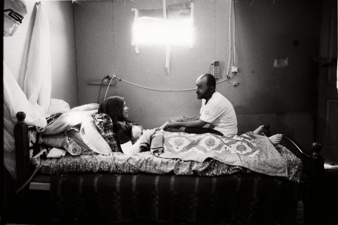
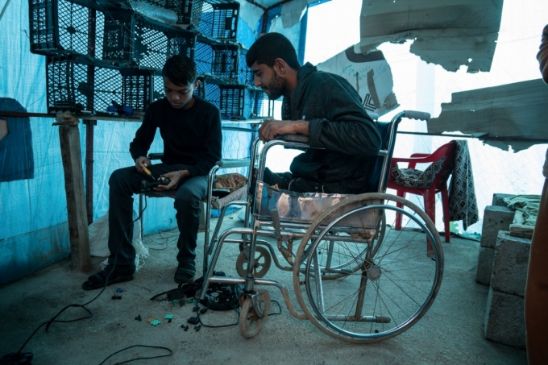
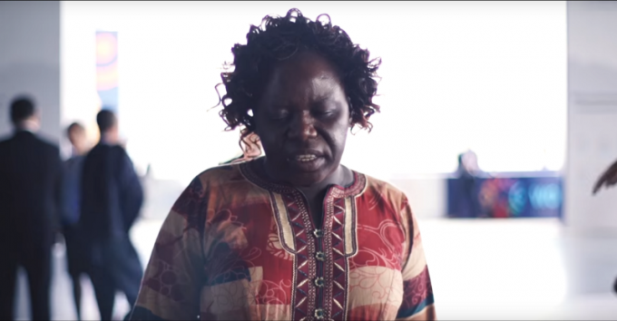

Five reasons why disability matters in a crisis

Kholoud, paralyzed from the neck down, sits with her husband in a makeshift shack in Lebanon’s Bekaa Valley. Credit: Giles Duley/Handicap International
In 2012, Kholoud was walking from her home in Syria to a small patch of land to pick vegetables when she was shot by a sniper. “Suddenly, a bullet hit my neck,” she said. “I fell down and lost sensation. I couldn’t move anymore.”
Kholoud, a 32-year-old mother of four, became paralyzed from the neck down. She fled Syria with her family in 2014, and they now live in Lebanon’s Bekaa Valley, where she receives emergency support from Handicap International.
Kholoud is one of the millions of people with disabilities around the world who are affected by conflict and disaster. Largely excluded from humanitarian response efforts, people with disabilities represent one of the most vulnerable and invisible groups during a crisis.
During this year’s World Humanitarian Summit, the global humanitarian community launched a historic agreement to collectively do more for people with disabilities in emergencies: the Charter on Inclusion of Persons with Disabilities in Humanitarian Action. Here are five reasons why disability matters in a crisis.
1. An estimated 20 million people with disabilities around the world are affected by crises — more than double the population of Sweden
Of the 1 billion people living with disabilities around the world, about 20 million are affected by conflict or disaster, and an estimated 6.7 million have been forcibly displaced from their homes. The number of people with disabilities tends to increase in emergencies, as people may be injured by fighting or falling debris, or lack access to medical care and essential services.
2. When crisis strikes, people with disabilities face higher risks to their well-being and survival
When fighting breaks out or when the earth begins to shake, people with disabilities often cannot flee on their own, and their families may not have the strength or means to assist them. Terrifying dangers can await those who are left behind, including risk of abuse and death. Following outbreaks of violence in the Central African Republic in early 2013, Human Rights Watch found that at least 96 people with disabilities had been abandoned or were unable to escape, and 11 were killed.

Caption: A young man with a disability fixes an electronic games console in a camp for internally displaced people in Kurdistan, Iraq. Photo: Giles Clarke/Getty Images Reportage
3. People with disabilities are falling through the cracks during response efforts
Even when they manage to reach relative safety, people with disabilities are largely excluded from humanitarian response efforts. Shelters may not be accessible, schools and hospitals often are not inclusive, staff rarely receive enough training. This means that many people with disabilities do not receive the assistance they desperately need. According to a global study by Handicap International, three quarters of people with disabilities reported not having access to adequate basic services, including water, sanitation and food assistance.
4. People with disabilities, especially women and girls, face significant protection risks in a crisis
As social and community structures break down during a crisis, protection threats build up. In these scenarios, people with disabilities are at a much higher risk of physical, emotional and sexual abuse, in part because they are often more isolated and have less access to protection services. Research from the Women’s Refugee Commission shows that women and girls with disabilities are particularly at risk of sexual and gender-based violence. However, they may not be able to access support for survivors due to difficulties in reaching services and communicating their needs, or for fear that their accounts will not be taken seriously.

Roseweter Mudarikwa, Chairperson of the Network of African Women with Disabilities, calls for action during the World Humanitarian Summit in Istanbul, May 2016: “We want the world to hear that, as women and girls with disabilities, we are partners.” Credit: OCHA
5. People with disabilities have valuable resources and capacities to contribute to their communities
Outdated perceptions of people with disabilities paint them as helpless and vulnerable. But the reality is that they want to, can and must participate in decisions that affect their lives and their communities. When humanitarian actors fail to meaningfully consult and engage, their operations risk not only missing people with disabilities, but also disempowering them. Organizations representing people with disabilities are key partners in humanitarian action, but these organizations remain a largely untapped resource.
The World Humanitarian Summit and the Charter on Inclusion of Persons with Disabilities in Humanitarian Action marked a turning point for the humanitarian community and for affected people with disabilities. So far, 139 stakeholders have endorsed the Charter, but much more needs to be done to ensure that people with disabilities are not left behind during a crisis.
This article was previously posted on Medium.